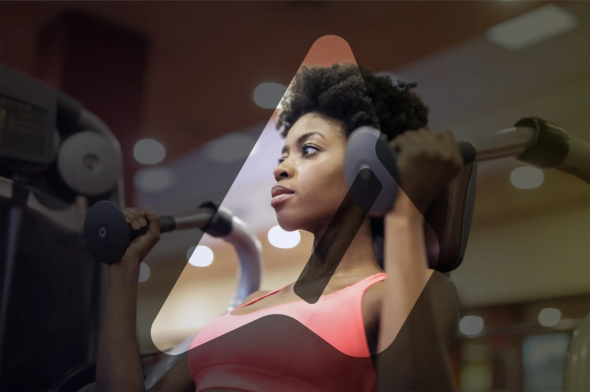
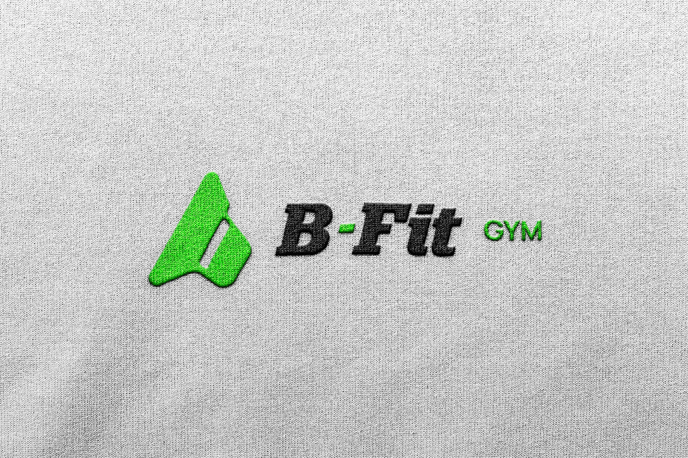
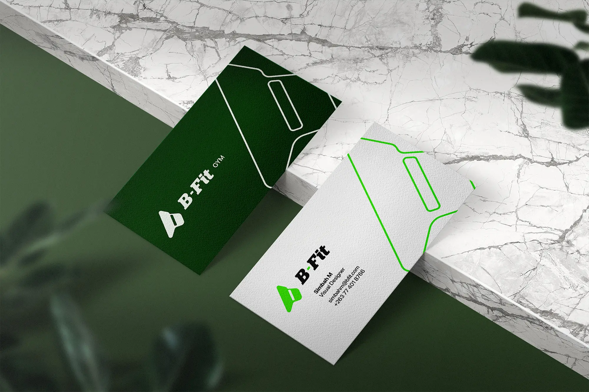
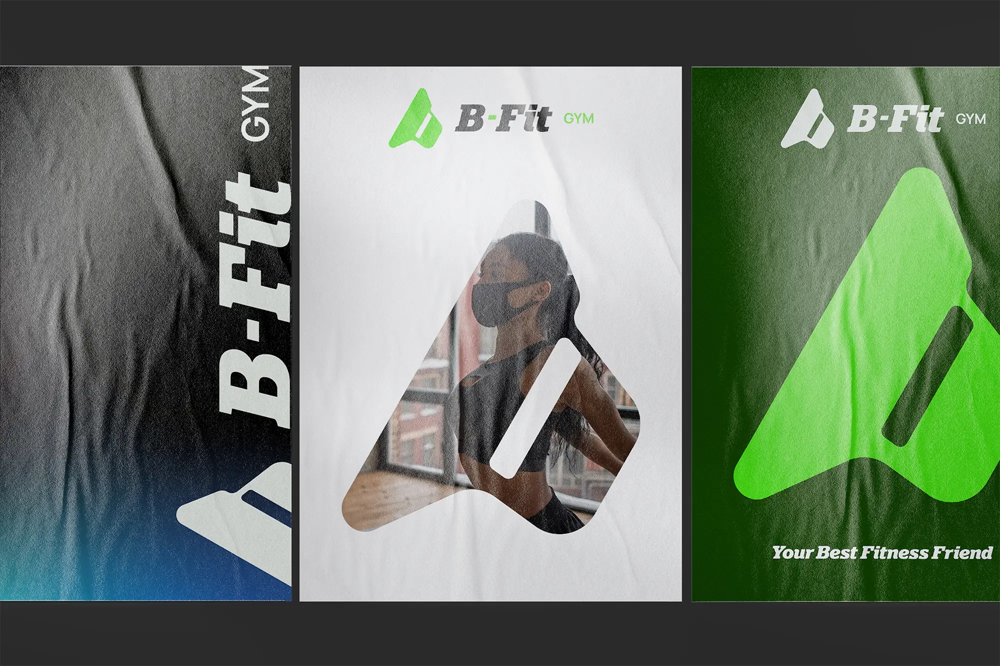
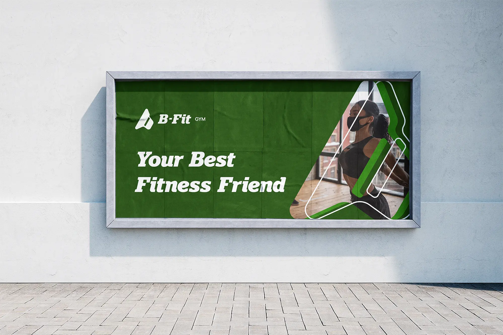
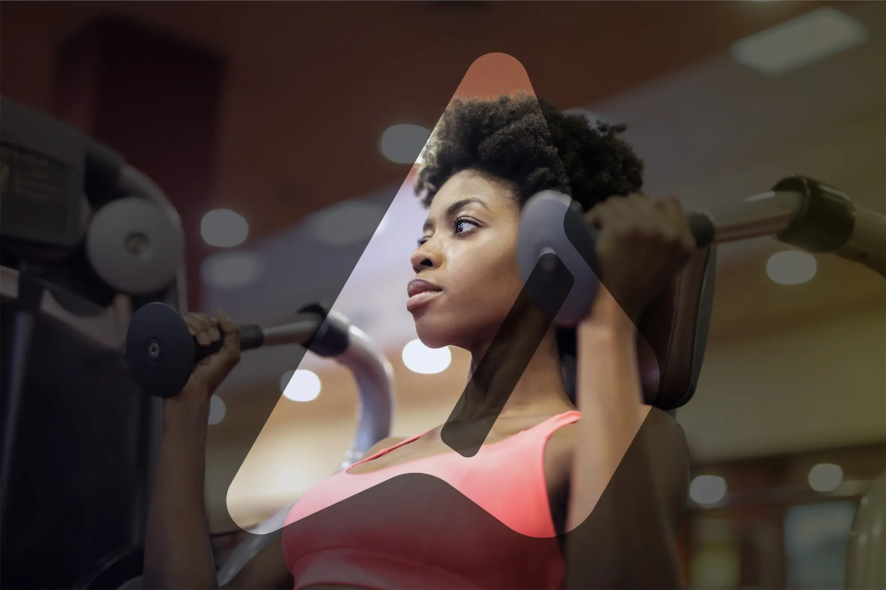
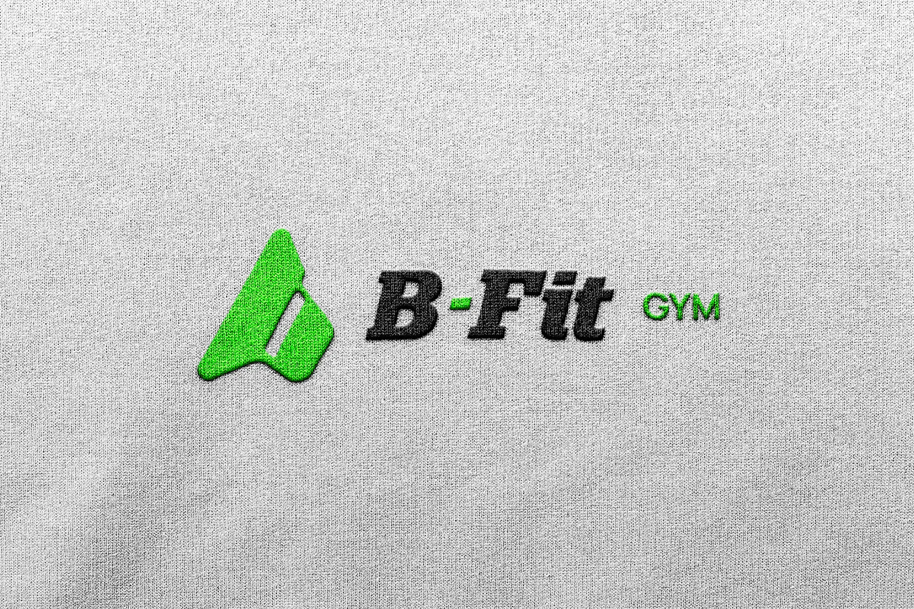
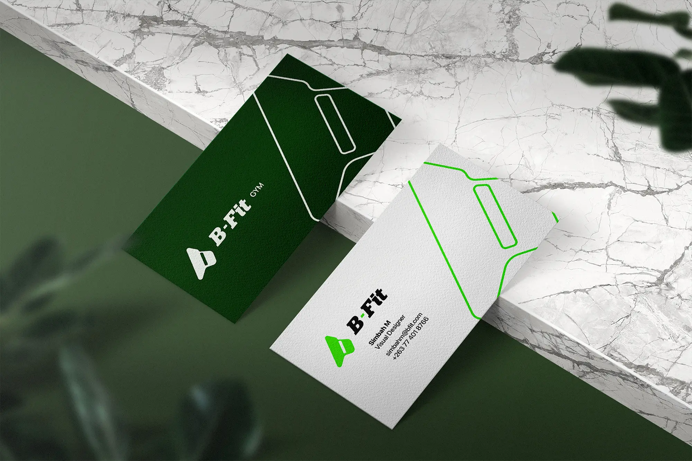
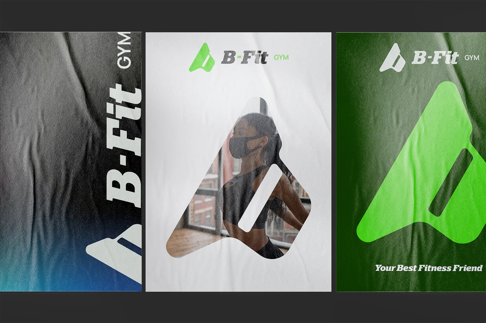
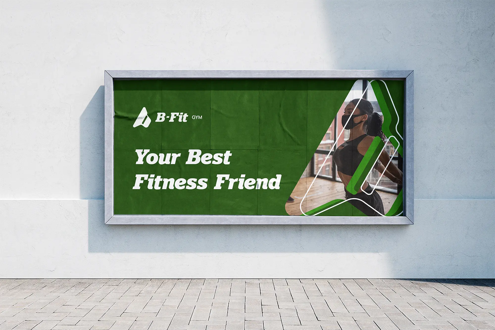
Logo Design Project
b-FIT innovates the fitness experience to empower and support the community nationwide. In a feel-good atmosphere, members from different backgrounds strive to do better every day.
They commit to the total fitness of thier members by helping them breaking barriers in mental, physical, and emotional health.
A good trademark is always simple and minimal! People easly remember and identify.
The chosen logo features a person lifting weights in the shape of the letter "b," which symbolizes energy and strength.
Multiple logo lockups made for smaller users where the logo gets smaller and wilth less details even for a favicon version for websites
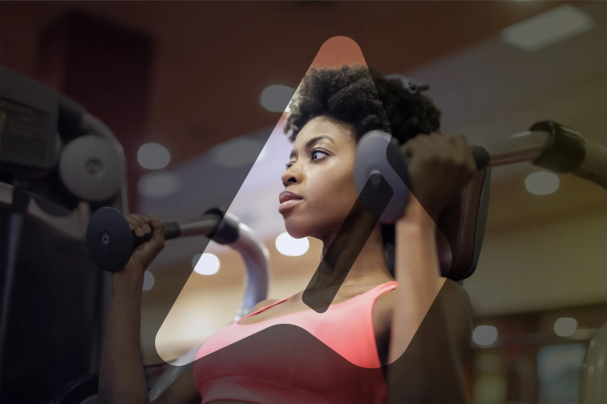
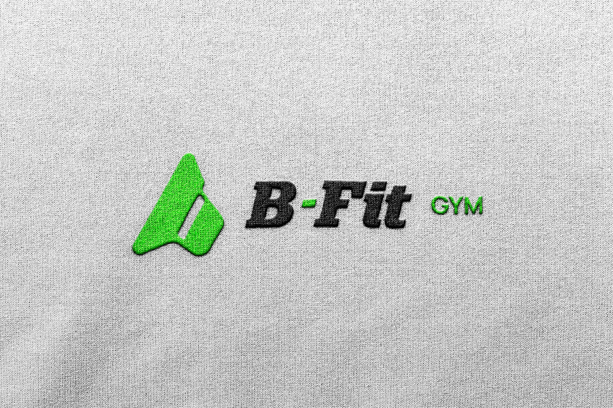
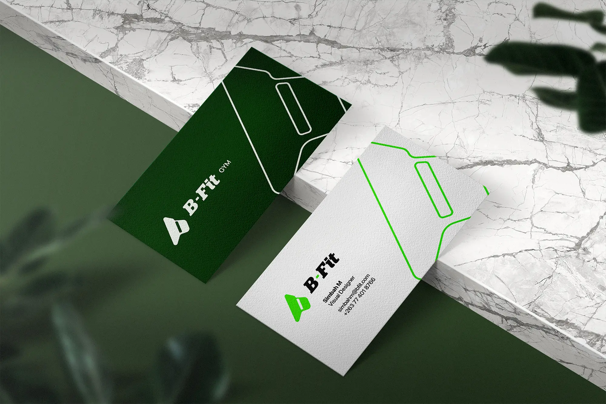
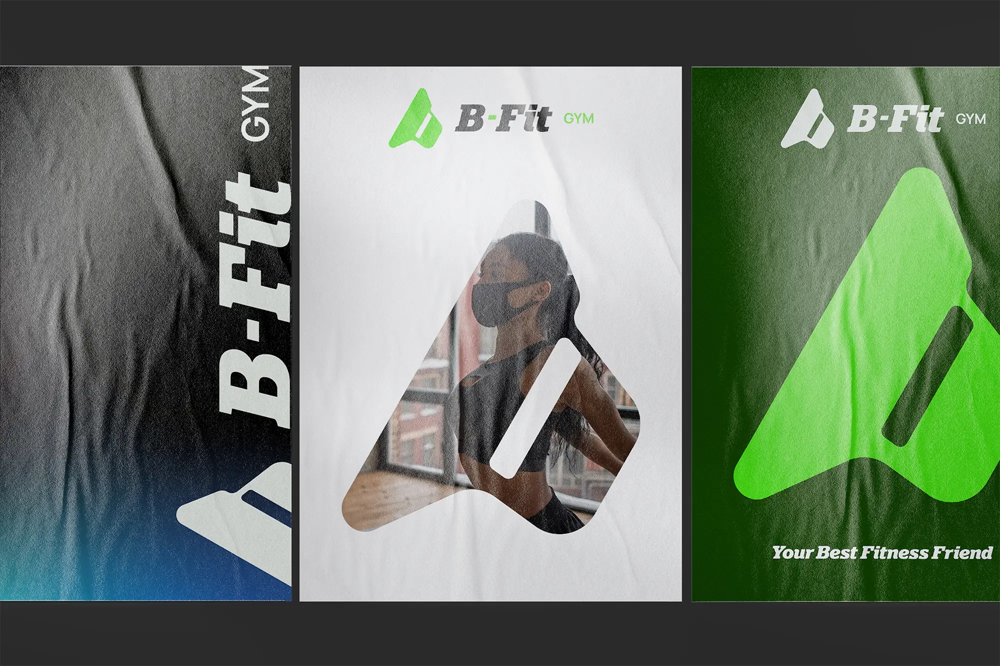
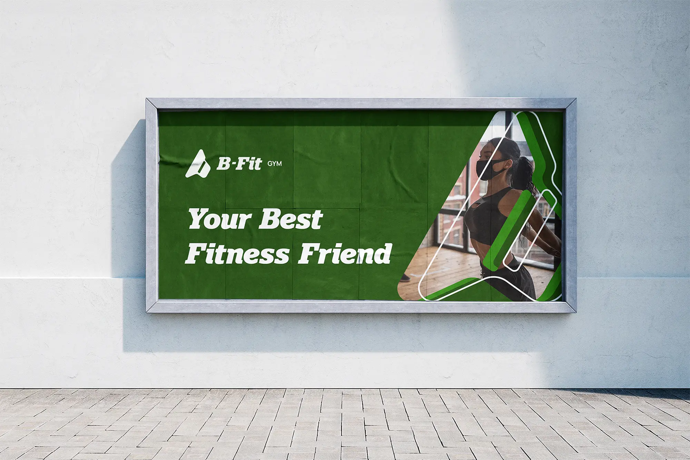